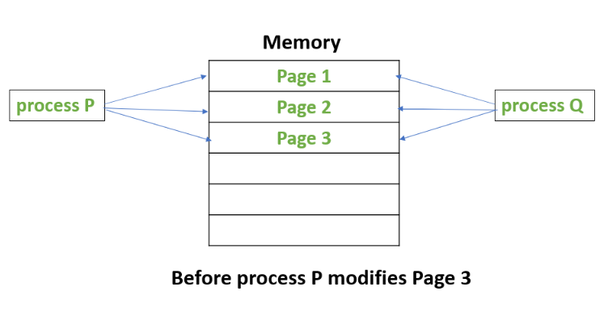
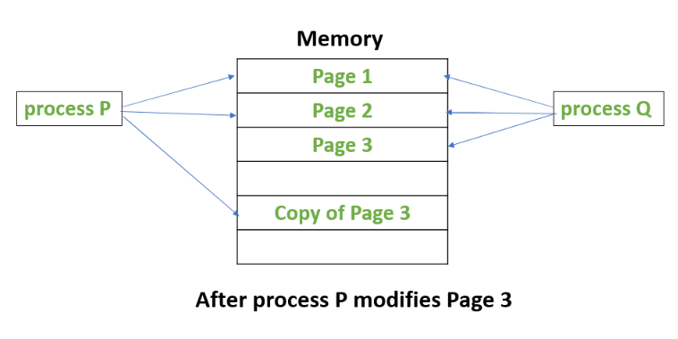
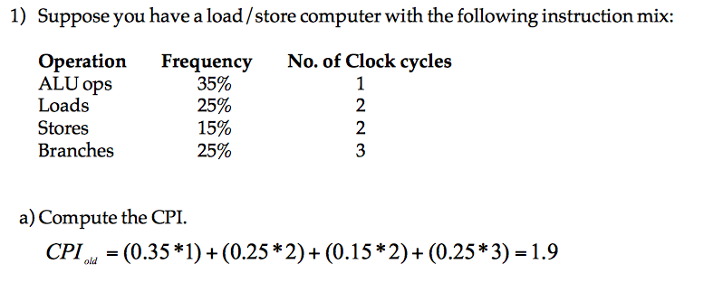

In a multicore processor, each core has its own L1 cache but they all share main memory. If two cores each hold a
copy of the same memory block and one of them writes to it, the other core is now looking at stale data. Keeping the
copies consistent is the cache coherence problem
(ScienceDirect,
ques10).
There are two families of solutions.
Snooping protocols. All caches sit on a shared bus and every cache controller watches ("snoops on") the traffic. When one cache writes to a block, it broadcasts that fact; any other cache that holds a copy of the block invalidates its copy. Simple, but broadcasting does not scale to many cores.
Directory protocols. A directory keeps track of which cores hold a copy of each block. On a write, messages are sent only to those cores, not to everyone. No broadcast is needed, so this works with less bus bandwidth and scales better.
Copy-on-write
When a process is duplicated (for example by fork), the child does not immediately get its own copy of every page. Instead, parent and child share the pages, and a page is copied only at the moment one of them writes to it. Until then both keep reading the original.
Plain read-write access has no such trick: reads and writes go straight to the page.
The rule of thumb: if the data will be modified, copy-on-write saves you from copying pages that never change; if you only ever read the data, there is nothing to copy in the first place.


Copy-on-write: only page 3 is copied, and only when P writes to it. Source: GeeksforGeeks
The five-stage pipeline
Every instruction passes through the same five stages, in this order:
IF, instruction fetch: read the instruction from memory.
ID, instruction decode: figure out what the instruction is and read its source registers.
EX, execute: do the arithmetic (or compute the memory address).
MEM, memory access: load from or store to memory, if the instruction needs it.
WB, write back: write the result into the destination register.
Single-cycle vs. multi-cycle vs. pipelined
Single-cycle: one instruction completes in one (long) clock cycle. The cycle has to be long enough for the slowest instruction to go through all five stages.
Multi-cycle: each stage takes one clock cycle, so an instruction takes several cycles, but the cycle can be much shorter. The cycle needs to be just long enough for the slowest stage to settle. If memory takes M ns, the register file R ns, and the ALU A ns, the cycle cannot be shorter than max(M, R, A).
Pipelined: same stage timing as multi-cycle, but stages of different instructions overlap. While one instruction is in EX, the next is in ID and the one after that in IF. In the ideal case one instruction finishes every cycle.
CPI is the average number of clock cycles an instruction takes on a given machine for a given program.
Compute it as a weighted average: CPI = Σ (fraction of instructions of type i) × (cycles for type i).
Execution time = (instruction count) × CPI × (clock cycle time), so lowering CPI is one of the three ways to make a program faster.

Worked example: 35% of instructions take 1 cycle, 25% take 2, 15% take 2, 25% take 3, so CPI = 0.35 + 0.5 + 0.3 + 0.75 = 1.9.
Subroutine
A sequence of instructions that performs a specific task and can be called from several places in a program. A function, in other words.
Stack-organized computer
A machine whose instructions take their operands from a stack rather than from named registers. Because the operands are implicit (always the top of the stack), its instructions are zero-address instructions: ADD pops two values and pushes the sum.
Write-through vs. write-back caches
Write-through: every write updates both the cache and main memory immediately. Simple and always consistent, but every write costs a memory access.
Write-back: a write updates only the cache and marks the block as dirty. Main memory is updated later, when the dirty block is evicted from the cache. Faster for repeated writes to the same block, but memory is temporarily out of date.
Memory-mapped I/O
I/O device registers are given addresses in the ordinary memory address space, so the CPU talks to devices with normal load and store instructions instead of special I/O instructions.
RISC vs. CISC
RISC (e.g. ARM, RISC-V)
CISC (e.g. x86)
Many registers
Fewer registers
Fixed-length instructions
Variable-length instructions
Simple instructions, typically one cycle each
Complex instructions that can take many cycles
Larger code size (more instructions to say the same thing)
Smaller code size
Variable-length ISAs allow a smaller code size than fixed-length ISAs. True. Common instructions can be encoded in fewer bytes.
Fixed-length ISAs make instruction fetch and decode simpler. True. The hardware always knows where the next instruction starts.
Variable-length ISAs (CISC) require more registers than fixed-length ISAs (RISC). False. It is the other way round: RISC machines are load/store architectures, so only load and store instructions touch memory and every arithmetic or logic instruction works on registers. That is why they need many registers.
Operand forwarding
A data hazard occurs when an instruction needs the result of an earlier instruction that is still in the pipeline. Without help, the later instruction has to wait until the result is written back, and the pipeline stalls: cycles go by with no useful work.
Forwarding (also called bypassing) fixes most of this. Instead of waiting for the result to reach the register file, the pipeline routes it straight from the stage where it was produced (say, the output of EX) to the stage that needs it. The intermediate value is taken from the pipeline registers between stages.
The effect is fewer stall cycles and better throughput. Forwarding cannot remove every stall (a load followed immediately by a use of the loaded value still needs one bubble), but it removes most of them.